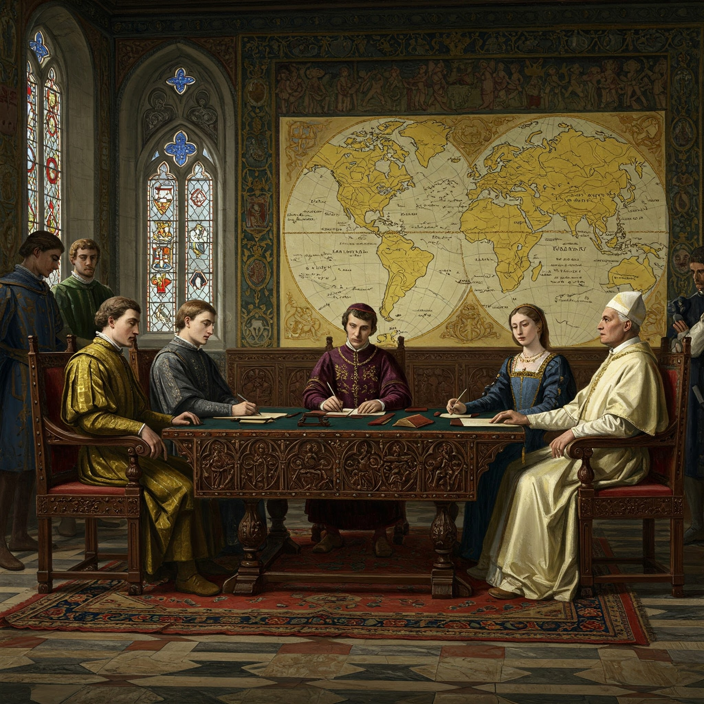

Treaty of Tordesillas (1494)
Both Countries Were Racing to Claim New Lands
- By the late 15th century, Spain and Portugal were the two biggest maritime powers in Europe.
- They were both exploring unknown territories in the Atlantic Ocean and along the African coast.
- Each country wanted to claim newly discovered lands for trade, wealth, and empire-building.
The Trigger: Columbus' Discovery in 1492
- When Christopher Columbus (sailing for Spain) reached the Caribbean in 1492, he claimed those lands for Spain.
- Portugal protested, saying those lands should belong to them—since they had already been exploring that region (especially the African coast).
The Pope Steps In
- To avoid war between these two powerful Catholic nations, Pope Alexander VI (a Spaniard) stepped in as a mediator in 1493.
- The Papal Bull of 1493 initially gave most of the New World to Spain, which angered Portugal.
So in 1494, both countries agreed to sign the Treaty of Tordesillas, negotiated directly between them without further papal interference.
What Did the Treaty Do?
- It drew an imaginary line (called the Line of Demarcation) 2,370 km west of the Cape Verde Islands (in the Atlantic).
| Direction | Belonged to | Included |
|---|---|---|
| West of the line | Spain | Most of the Americas |
| East of the line | Portugal | Parts of Africa, Asia, and later Brazil |
Interesting Twist:
- When Portugal later discovered Brazil, it happened to fall east of the line, so they kept it.
- That’s why Brazil speaks Portuguese today, while the rest of South America mostly speaks Spanish!